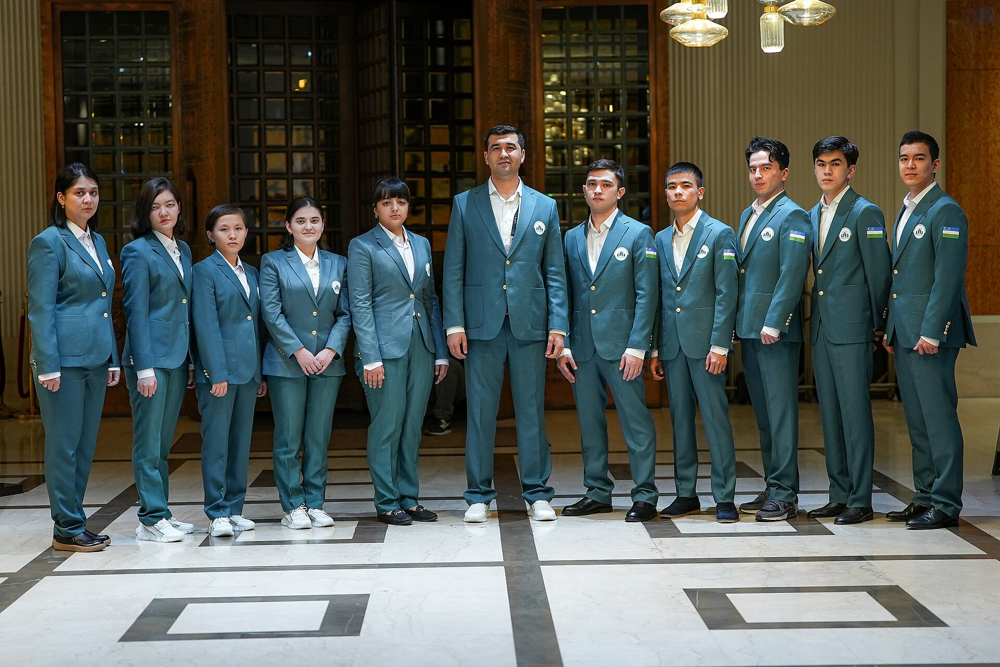

Узбекистан выиграл 46-ю Шахматную олимпиаду в Самарканде
Мужская сборная Узбекистана завоевала золото дома, в Самарканде, набрав 20 матчевых очков и заняв первое место — это второй олимпийский титул страны.

Мужская сборная Узбекистана по шахматам завоевала золото 46-й Всемирной шахматной олимпиады, прошедшей в Самарканде. Команда заняла первое место, набрав 20 из 22 матчевых очков — 10 побед в турах и одно поражение.
Решающий тур
В решающем последнем туре Узбекистан обыграл Украину со счётом 2,5–1,5. Победное очко на четвёртой доске принёс запасной Мухиддин Мадаминов, завершивший олимпиаду без поражений — 5,5 из 7.
Состав и личные результаты
Состав: Нодирбек Абдусатторов (1-я доска), Джавохир Синдаров (2-я), Нодирбек Якуббоев (3-я), Жасур Вохидов (4-я) и запасной Мухиддин Мадаминов; капитан — Рустам Касымджанов. Абдусатторов взял личное золото на первой доске с результатом 8,5 из 11 и не проиграл ни одной партии.
Серебро и бронза
Серебро по дополнительным показателям досталось Индии, бронза — Германии; обе команды набрали по 18 матчевых очков. В открытом турнире установлен рекорд участия: 206 команд из 204 стран и 1024 шахматиста.
Женский турнир
В женской олимпиаде Китай обыграл Вьетнам со счётом 3–1 и завоевал седьмой титул. Серебро у Казахстана, бронза у Индии.
История и признание
Это второе олимпийское золото Узбекистана после Ченнаи-2022; в 2024 году в Будапеште была завоёвана бронза. Четверо из пяти игроков состава 2022 года снова победили в Самарканде.
Президент Шавкат Мирзиёев поздравил команду, назвав их «золотым поколением» и «героями Нового Узбекистана». Нодирбек Абдусатторов после победы сказал: «Сейчас мы — сильнейшая команда мира».